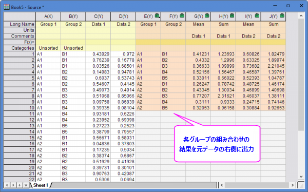
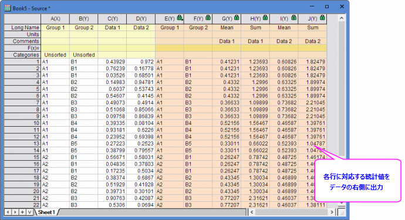

並列統計
Side-by-Side-Statistics
はじめに
並列統計は、グループごとに列データの統計を計算し、元データの各行の右側に結果を出力するための機能です。
以下の2通りの出力が可能です。
- 元データの右側にグループごとに統計結果をまとめて出力


並列統計の実行
並列統計を実行するには、
- メニューから統計：並列統計を選択します。
- 入力データとグループに解析対象のデータ列を指定します。次に、値ブランチで出力する統計量を指定します。
- グループごとの統計結果を右にまとめて出力するか、各行に対応する統計値を右に出力するかを指定します。
- OKをクリックすると、ソースデータの右側に結果が表示されます。